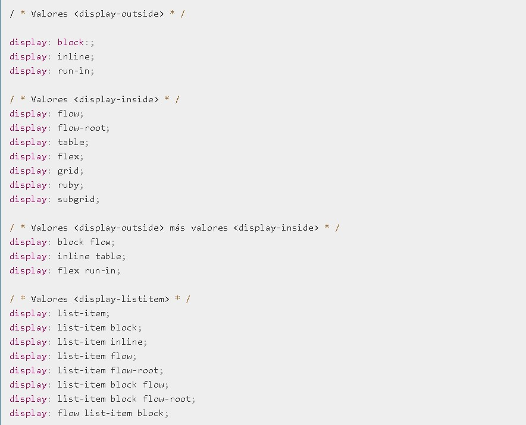
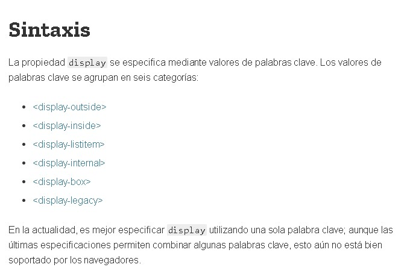
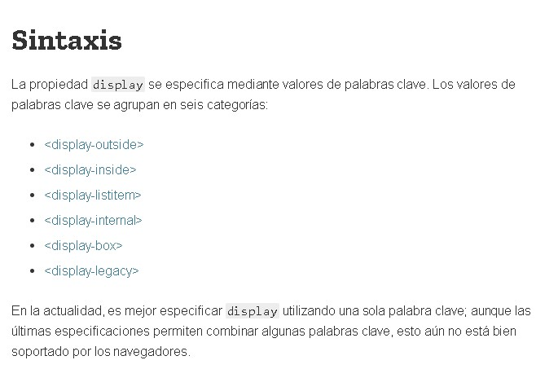

Exponer las propiedades básicas de CSS, Display: inline, block, inline-block dando claridad
CSS (en inglés Cascading Style Sheets) es lo que se denomina lenguaje de hojas de estilo en cascada y se usa para estilizar elementos escritos en un lenguaje de marcado como HTML. CSS separa el contenido de la representación visual del sitio. CSS fue desarrollado por W3C (World Wide Web Consortium) en 1996 por una razón muy sencilla. HTML no fue diseñado para tener etiquetas que ayuden a formatear la página. Está hecho solo para escribir el marcado para el sitio. Se incluyeron etiquetas como font en HTML versión 3.2, y esto les causó muchos problemas a los desarrolladores. Dado que los sitios web tenían diferentes fuentes, fondos de colores y estilos, el proceso de reescribir el código fue largo, doloroso y costoso. Por lo tanto, CSS fue creado por W3C para resolver este problema. La relación entre HTML y CSS es muy fuerte. Dado que HTML es un lenguaje de marcado (es decir, constituye la base de un sitio) y CSS enfatiza el estilo (toda la parte estética de un sitio web), van de la mano. CSS no es técnicamente una necesidad, pero no querrás tener un sitio que solo tenga HTML, ya que se vería completamente desnudo. Ventajas de CSS.
La diferencia entre un sitio web que implementa CSS y uno que no, es enorme y definitivamente se nota. Quizás hayas visto algún sitio web que no se puede cargar por completo y tiene un fondo blanco con la mayor parte del texto en azul y negro. Eso significa que la parte CSS del sitio no se cargó correctamente o no existe. Así es como se ve un sitio con solo HTML, y creo que estarás de acuerdo conmigo en que no luce muy bien. Antes de CSS, todo el estilo debía incluirse en el marcado HTML. Esto significa que había que describir por separado todos los fondos, los colores de fuente, las alineaciones, etc. CSS permite estilizar todo en un archivo diferente, creando el estilo allí y después integrando el archivo CSS sobre el marcado HTML. Esto hace que el marcado HTML sea mucho más limpio y fácil de mantener. En resumen, con CSS no tienes que describir repetidamente cómo se ven los elementos individuales. Esto ahorra tiempo, hace el código más corto y menos propenso a errores. CSS te permite tener múltiples estilos en una página HTML, y esto hace que las posibilidades de personalización sean casi infinitas. Hoy en día, esto se está volviendo una necesidad más que algo básico. Cómo funciona CSS.
CSS utiliza una sintaxis simple basada en el inglés con un conjunto de reglas que la gobiernan. Como mencionamos anteriormente, HTML no fue hecho con la intención de utilizar elementos de estilo, sino solo para el marcado de la página. Fue creado simplemente para describir el contenido. Por ejemplo:
Esto es un párrafo.
. Pero, ¿cómo le aplicas un estilo al párrafo? La estructura de sintaxis CSS es bastante simple. Cuenta con un selector y un bloque de declaración. Primero seleccionas un elemento y luego declaras lo que quieres hacer con él. Bastante sencillo, ¿verdad? Sin embargo, hay reglas que debes recordar. Las reglas de la estructura son bastante simples, así que no te preocupes. El selector apunta al elemento HTML que deseas estilizar. El bloque de declaración contiene una o más declaraciones separadas por punto y coma. Cada declaración incluye un nombre de propiedad CSS y un valor, separados por dos puntos. Una declaración CSS siempre termina con un punto y coma, y los bloques de declaración están rodeados por llaves. Veamos un ejemplo:
Ahora pasemos a hablar de los diferentes estilos de CSS, que son Inline, Externo e Interno.
Haremos una revisión breve de cada estilo, y para obtener una explicación detallada de cada método, habrá un enlace debajo de la descripción. Empecemos hablando del estilo Interno. Los estilos CSS hechos de esta manera se cargan cada vez que se actualiza un sitio web, lo que puede aumentar el tiempo de carga. Además, no podrás usar el mismo estilo CSS en varias páginas, ya que está contenido en una sola página. Sin embargo, esto también tiene sus beneficios. Tener todo en una página facilita compartir la plantilla para una vista previa. El método Externo podría ser el más conveniente. Todo se hace externamente en un archivo .css. Esto significa que puedes hacer todo el estilizado en un archivo separado y aplicar el CSS a cualquier página que quieras. El estilo Externo también puede mejorar los tiempos de carga. Por último, hablemos del estilo Inline de CSS. Inline trabaja con elementos específicos que tienen la etiqueta style. Cada componente tiene que ser estilizado, por lo que podría no ser la mejor forma, ni la más rápida para manejar CSS. Pero puede ser útil, por ejemplo, si quieres cambiar un solo elemento, tener una vista previa rápida de los cambios o tal vez no tengas acceso a los archivos CSS.
Resumamos lo que hemos aprendido: CSS fue creado para trabajar en conjunto con lenguajes de marcado como HTML. Se utiliza para estilizar una página. Hay tres estilos de implementación de CSS, y puedes usar el estilo Externo para asignar varias páginas a la vez. Hoy en día podrás ver algún tipo de implementación de CSS en cualquier parte, ya que es un requisito tan importante como el propio lenguaje de marcado.
La propiedad CSS display especifica si un elemento es tratado como block or inline element y el diseño usado por sus hijos, como flow layout (Diseño de Flujo), grid (Cuadricula) o flex(Flexible).
Formalmente la propiedad display establece los tipos de visualización interna y externa de un elemento. La tipo externa establece la participación de un elemento en flow layout; la tipo interna establece el layout(Diseño) de los hijos. Algunos valores de display están totalmente definidos con sus especificaciones propias; por ejemplo el detalle de qué pasa cuando display: flex es declarado y definido en la especificación de Modelo Flexible de Caja (Flexible Box Model specification) de CSS. (Vea la siguiente referencia para más especificaciones individuales).
Además de los Diferentes Tipos de caja de Visualización, el valor de none permite Desactivar la Visualización DE UN Elemento; cuando no se utiliza none, todos los elementos descendentes también quedan desactivados. El documento se procesa como si el elemento no existiera en el árbol de documentos
 

Estas palabras clave especifican el tipo de pantalla externa del elemento, que es esencialmente su función en el diseño de flujo: A continuación se definen:
Block: El elemento genera un cuadro de elemento de bloque
Inline: El elemento genera uno o más cuadros de elemento en línea.
CSS 2 usó una sintaxis de palabra clave única para la propiedad display, requiriendo palabras clave separadas para variantes de nivel de bloque e inline del mismo modo de disposición. Se definen como sigue:
inline-block: El elemento genera una caja de elemento de bloque que fluye con el contenido circundante como si fuera una sola caja en línea (comportándose como un elemento reemplazado)
Es equivalente a inline flow-root